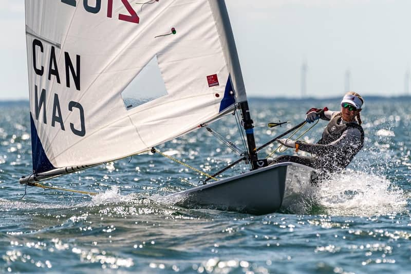
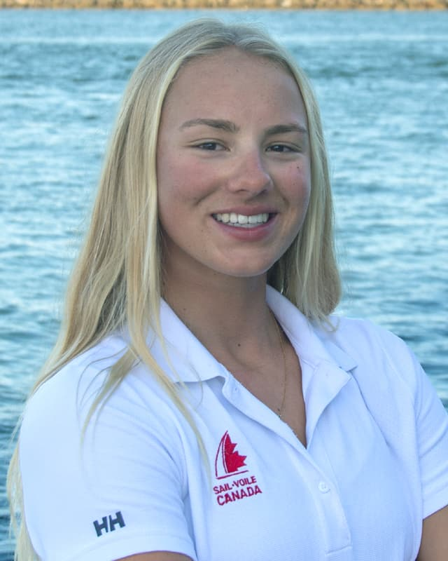
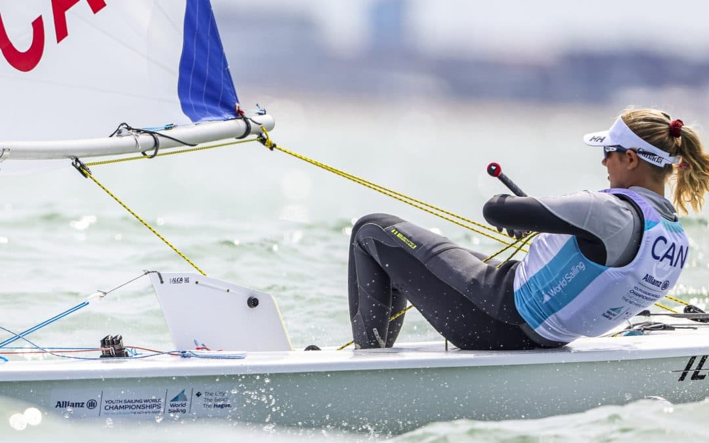
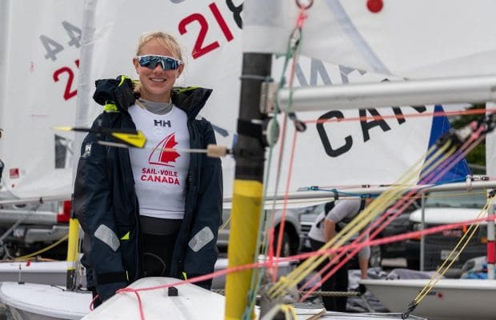

Coaching
On-water and video-debrief coaching for club and youth racers in the ILCA 6, 7 and 4 — starts, boat handling, race technique and regatta strategy.
Inquire
Canadian Sailing Team · ILCA 6
Full-time sailor racing the senior international circuit in the ILCA 6 — and the best Canadian result in the history of the U21 Worlds. Next stop: an Olympic campaign for 2028 and 2032.
01 — About

Annalise “Annie” Balasubramanian · b. 2004 · Toronto, Canada
Annie has been a member of the Royal Canadian Yacht Club since 2015, learning to race through its junior program and spending every summer on the water with her family — a habit she has never broken.
She started sailing the ILCA 6 at 14 and hasn’t stopped since. She raced with the Ontario Sailing Team from 2019 to 2023 and has been part of the Canadian Sailing Development Squad since 2023. Along the way: 10th at her first Open Youth Worlds, three ISAF Youth Worlds — two of them inside the top 12, the best Canadian mark at that event since 2009 — a bronze medal at the 2022 Canada Summer Games, and the Bill Burke Memorial Youth Sailor of the Year award in 2020, 2021 and 2022.
In 2024 she finished 15th of 80 at the Under-21 World Championships in Viana do Castelo, Portugal — the best result any Canadian has posted at that event.
Now a full-time athlete, Annie trains roughly 130 days on the water between January and September, building toward 180 in a full year, backed by a five-day gym week and a serious approach to recovery and nutrition.
02 — 2026 Season
Annie races the 2026 season on the senior international circuit, with the first Olympic qualification event set for January 2027. The focus this year: training volume and consistency.
Event dates are confirmed through the season — see WindAthletes for the live schedule.

03 — Results
| ILCA North American Grand Prix | 4th overall · 1st Female |
|---|---|
| Senior Canadian Championships | 2nd / 23 |
| North American Championships | 5th / 96 · 3rd Female · 2nd Canadian |
| Women’s Kiel Week Grand Slam | 30th / 88 |
| Midwinter’s East | 5th / 150 · 2nd Female · 1st Canadian |
| U21 World Championships | 15th / 80 · 1st Canadian |
|---|---|
| Midwinter’s East | 9th / 102 · 2nd Female · 1st Canadian |
| North American Championships | 13th / 100 · 3rd Female · 3rd Canadian |
| ISAF Youth World Championships | 11th / 46 |
|---|---|
| Sail Canada Youth & Senior Championships | 6th / 143 · 1st Female |
| Youth World Championships — Texas, USA | 10th / 50 · 1st Canadian |
|---|---|
| ISAF Youth World Championships — The Hague, NED | 12th / 56 |
| Canada Summer Games | Bronze medal |
| ISAF Youth World Championships — Oman | 22nd / 46 |
|---|---|
| CORK International | 6th / 138 · 1st Female |
04 — Support
Annie is a full-time athlete self-funding a run at the 2028 and 2032 Olympic Games. Every contribution — whatever the size — goes toward coaching, travel and time on the water.
Following and sharing counts too — it puts the campaign in front of people who can help.
05 — Work with Annie

On-water and video-debrief coaching for club and youth racers in the ILCA 6, 7 and 4 — starts, boat handling, race technique and regatta strategy.
InquireOne-to-one video calls for young sailors — especially girls coming up through club programs. Honest talk about racing, training, setbacks and staying in the sport.
InquireTalks for clubs, schools, teams and events — the road to a national team, life as a full-time athlete, and what an Olympic campaign actually takes.
Inquire06 — Contact
For coaching, mentorship, speaking or anything else — send a note.